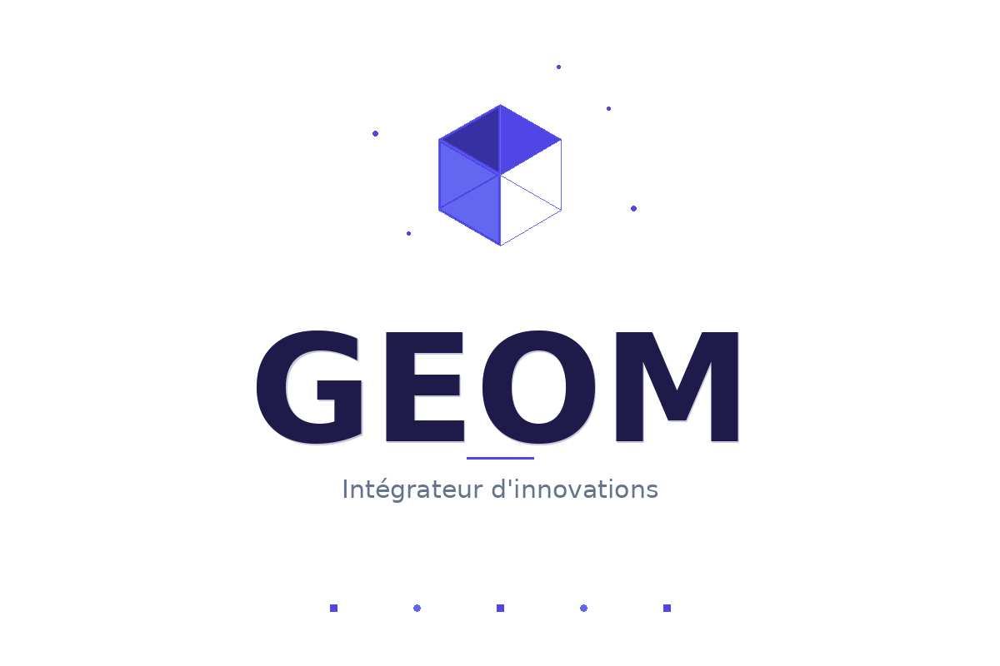

IS standard 2026
20 %
Barème proportionnel CGI
Prime Charte 2023
10–30 %
Cumul base + territoriale + secteur
Publications ouvertes
4
Accès libre, sans inscription
Adhésion
Gratuite
Financement par dons et subventions

Groupement fédérateur national
Fédérer les opérateurs économiques du Maroc, au-delà des frontières sectorielles.
GEOM est un groupement professionnel à but non lucratif qui réunit industriels, promoteurs immobiliers, opérateurs touristiques, investisseurs et prestataires de services autour d'un espace commun de dialogue, de représentation et de recherche économique — en complément des fédérations sectorielles existantes.
Un fédérateur, plusieurs collèges
Six collèges professionnels, un même groupement
GEOM organise ses membres par collège d'activité. Un opérateur peut y adhérer même s'il est déjà membre d'une fédération sectorielle (AMICA, FIMME, FENELEC, AMITH, FENAGRI…) : la vocation de GEOM est transversale, pas concurrente.
Axes de recherche
Trois axes, un même objectif : éclairer la décision par la recherche
Dernières publications
Études et notes d'analyse récentes
Note de terrain : GEOM démarre volontairement en ligne, avec une petite équipe fondatrice, avant d'élargir sa base d'adhérents. Chaque étude publiée est validée par le Conseil Scientifique avant diffusion.